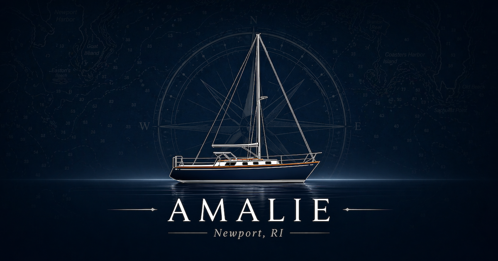

Sunset Cruise
Catch the golden hour over the West Passage as Newport slips astern. Our most-requested sail — quiet, glowing, and perfect for two.
Duration2 hours
Best forCouples
DepartsEarly evening
Newport, Rhode Island
Private sunset cruises and afternoon sails on Narragansett Bay aboard a classic 1985 Bristol 31.1 — hosted, unhurried, and made for two.
The Sails
Every sail is private — just your party aboard Amalie. Step on, settle in, and let the bay do the rest. We handle the lines and the course; you bring the company.
Catch the golden hour over the West Passage as Newport slips astern. Our most-requested sail — quiet, glowing, and perfect for two.
A longer reach across Narragansett Bay with time to take the helm, find a quiet cove, and feel what a classic Bristol does under sail.
Proposals, anniversaries, or a celebration that deserves the water. Tell us the moment and we'll set the course around it.

Aboard Amalie
Amalie is a 1985 Bristol 31.1 — a graceful, sea-kindly daysailer built in Rhode Island and lovingly maintained, sail after sail. At 31 feet she's intimate by design: roomy enough to relax, small enough to feel the wind.
You'll sail with us — Blake and Ashlyn — as your hosts and crew. No crowds, no schedule but yours. Just an easy afternoon or a slow sunset on one of the prettiest stretches of water in New England.
Inquire
Tell us your dates and the kind of afternoon you have in mind, and we'll find the right tide and a clear horizon. Sails run May through October, weather permitting.